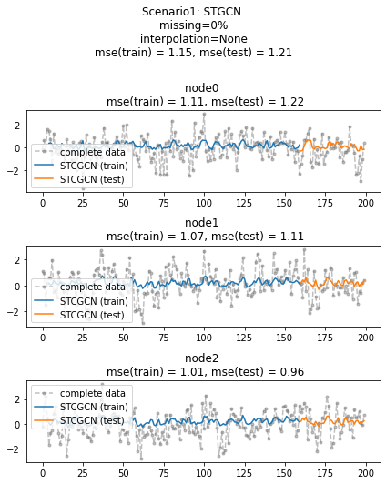

import numpy as np
import pandas as pd
import matplotlib.pyplot as plt
from matplotlib import animation
# torch
import torch
import torch.nn.functional as F
import torch_geometric_temporal
from torch_geometric_temporal.nn.recurrent import GConvGRU
# scipy
from scipy.interpolate import interp1d
# utils
import time
import pickle
from tqdm import tqdm
# rpy2
import rpy2
import rpy2.robjects as ro
from rpy2.robjects.vectors import FloatVector
import rpy2.robjects as robjects
from rpy2.robjects.packages import importr
import rpy2.robjects.numpy2ri as rpynGNAR fiveNet,fivenodes lag 1
import
class RecurrentGCN(torch.nn.Module):
def __init__(self, node_features, filters):
super(RecurrentGCN, self).__init__()
self.recurrent = GConvGRU(node_features, filters, 2)
self.linear = torch.nn.Linear(filters, 1)
def forward(self, x, edge_index, edge_weight):
h = self.recurrent(x, edge_index, edge_weight)
h = F.relu(h)
h = self.linear(h)
return hmy functions
def load_data(fname):
with open(fname, 'rb') as outfile:
data_dict = pickle.load(outfile)
return data_dictdef save_data(data_dict,fname):
with open(fname,'wb') as outfile:
pickle.dump(data_dict,outfile)def plot(f,*args,t=None,h=2.5,**kwargs):
T,N = f.shape
if t == None: t = range(T)
fig = plt.figure()
ax = fig.subplots(N,1)
for n in range(N):
ax[n].plot(t,f[:,n],*args,**kwargs)
ax[n].set_title('node='+str(n))
fig.set_figheight(N*h)
fig.tight_layout()
plt.close()
return figdef plot_add(fig,f,*args,t=None,**kwargs):
T = f.shape[0]
N = f.shape[1]
if t == None: t = range(T)
ax = fig.get_axes()
for n in range(N):
ax[n].plot(t,f[:,n],*args,**kwargs)
return figdef make_Psi(T):
W = np.zeros((T,T))
for i in range(T):
for j in range(T):
if i==j :
W[i,j] = 0
elif np.abs(i-j) <= 1 :
W[i,j] = 1
d = np.array(W.sum(axis=1))
D = np.diag(d)
L = np.array(np.diag(1/np.sqrt(d)) @ (D-W) @ np.diag(1/np.sqrt(d)))
lamb, Psi = np.linalg.eigh(L)
return Psiebayesthresh = importr('EbayesThresh').ebayesthreshdef trim(f):
f = np.array(f)
if len(f.shape)==1: f = f.reshape(-1,1)
T,N = f.shape
Psi = make_Psi(T)
fbar = Psi.T @ f # apply dft
fbar_threshed = np.stack([ebayesthresh(FloatVector(fbar[:,i])) for i in range(N)],axis=1)
fhat = Psi @ fbar_threshed # inverse dft
return fhatdef update_from_freq_domain(signal, missing_index):
signal = np.array(signal)
T,N = signal.shape
signal_trimed = trim(signal)
for i in range(N):
signal[missing_index[i],i] = signal_trimed[missing_index[i],i]
return signalclass DatasetLoader(object):
def __init__(self,data_dict):
self._dataset = data_dict
def _get_edges(self):
self._edges = np.array(self._dataset["edges"]).T
def _get_edge_weights(self):
self._edge_weights = np.ones(self._edges.shape[1])
def _get_targets_and_features(self):
stacked_target = np.array(self._dataset["FX"])
self.features = [
stacked_target[i : i + self.lags, :].T
for i in range(stacked_target.shape[0] - self.lags)
]
self.targets = [
stacked_target[i + self.lags, :].T
for i in range(stacked_target.shape[0] - self.lags)
]
def get_dataset(self, lags: int = 4) -> torch_geometric_temporal.signal.StaticGraphTemporalSignal:
"""Returning the Chickenpox Hungary data iterator.
Args types:
* **lags** *(int)* - The number of time lags.
Return types:
* **dataset** *(torch_geometric_temporal.signal.StaticGraphTemporalSignal)* - The Chickenpox Hungary dataset.
"""
self.lags = lags
self._get_edges()
self._get_edge_weights()
self._get_targets_and_features()
dataset = torch_geometric_temporal.signal.StaticGraphTemporalSignal(
self._edges, self._edge_weights, self.features, self.targets
)
return datasetdef stgcn(train_dataset,lags=1,filters=32,epoch=50):
model = RecurrentGCN(node_features=lags, filters=filters)
optimizer = torch.optim.Adam(model.parameters(), lr=0.01)
model.train()
for epoch in tqdm(range(epoch)):
for t, snapshot in enumerate(train_dataset):
yt_hat = model(snapshot.x, snapshot.edge_index, snapshot.edge_attr)
cost = torch.mean((yt_hat-snapshot.y)**2)
cost.backward()
optimizer.step()
optimizer.zero_grad()
return model %load_ext rpy2.ipython%%R
library(GNAR)
library(igraph)
library(zoo)R[write to console]: Loading required package: igraph
R[write to console]:
Attaching package: ‘igraph’
R[write to console]: The following objects are masked from ‘package:stats’:
decompose, spectrum
R[write to console]: The following object is masked from ‘package:base’:
union
R[write to console]: Loading required package: wordcloud
R[write to console]: Loading required package: RColorBrewer
R[write to console]:
Attaching package: ‘zoo’
R[write to console]: The following objects are masked from ‘package:base’:
as.Date, as.Date.numeric
%%R
fiveNet_m <- as.matrix(fiveNet)%R -o fiveNet_mGNAR = importr('GNAR') # import GNAR
igraph = importr('igraph') # import igraph data 정리
- 데이터정리
_data = load_data('./data/fivenodes.pkl')_edges = torch.tensor(_data['edges']).nonzero().tolist()
_FX = _data['f'].tolist()
_node_ids = {'node1':0, 'node2':1, 'node3':2, 'node4':3, 'node5':4} data_dict = {'edges':_edges, 'node_ids':_node_ids, 'FX':_FX}train_dataset.edge_index.T.tolist()[[0, 3],
[0, 4],
[1, 2],
[1, 3],
[2, 1],
[2, 3],
[3, 0],
[3, 1],
[3, 2],
[4, 0]]train_dataset.loader = DatasetLoader(data_dict)
dataset = loader.get_dataset(lags=4)
train_dataset, test_dataset = torch_geometric_temporal.signal.temporal_signal_split(dataset, train_ratio=0.8)- STGCN 수행
class StgcnLearner:
def __init__(self,train_dataset):
self.train_dataset = train_dataset
self.lags = torch.tensor(train_dataset.features).shape[-1]
def learn(self,filters=32,epoch=50):
self.model = RecurrentGCN(node_features=self.lags, filters=filters)
self.optimizer = torch.optim.Adam(self.model.parameters(), lr=0.01)
self.model.train()
for epoch in tqdm(range(epoch)):
for t, snapshot in enumerate(self.train_dataset):
yt_hat = self.model(snapshot.x, snapshot.edge_index, snapshot.edge_attr)
cost = torch.mean((yt_hat-snapshot.y)**2)
cost.backward()
self.optimizer.step()
self.optimizer.zero_grad()
def __call__(self,dataset):
X = torch.tensor(dataset.features).float()
y = torch.tensor(dataset.targets).float()
yhat = torch.stack([self.model(snapshot.x, snapshot.edge_index, snapshot.edge_attr) for snapshot in dataset]).detach().squeeze().float()
return {'X':X, 'y':y, 'yhat':yhat} lrnr = StgcnLearner(train_dataset)lrnr.learn(filters=32,epoch=1)100%|██████████████████████████████████████████████████████████████████████████████████████████████████████████████████████████████████████████████████████████████████████████████████████████████████████████████████████████████████████████████████████████████████| 1/1 [00:01<00:00, 1.62s/it]rslt = lrnr(dataset)class Evaluator:
def __init__(self,learner,train_dataset,test_dataset):
self.learner = learner
self.train_dataset = train_dataset
self.test_dataset = test_dataset
self.lags = lrnr.lags
rslt_tr = self.learner(self.train_dataset)
rslt_test = self.learner(self.test_dataset)
self.X_tr = rslt_tr['X']
self.y_tr = rslt_tr['y']
self.f_tr = torch.concat([self.train_dataset[0].x.T,self.y_tr],axis=0).float()
self.yhat_tr = rslt_tr['yhat']
self.fhat_tr = torch.concat([self.train_dataset[0].x.T,self.yhat_tr],axis=0).float()
self.X_test = rslt_test['X']
self.y_test = rslt_test['y']
self.f_test = self.y_test
self.yhat_test = rslt_test['yhat']
self.fhat_test = self.yhat_test
self.f = torch.concat([self.f_tr,self.f_test],axis=0)
self.fhat = torch.concat([self.fhat_tr,self.fhat_test],axis=0)
def calculate_mse(self):
train_mse_eachnode = ((self.y_tr-self.yhat_tr)**2).mean(axis=0).tolist()
train_mse_total = ((self.y_tr-self.yhat_tr)**2).mean().item()
test_mse_eachnode = ((self.y_test-self.yhat_test)**2).mean(axis=0).tolist()
test_mse_total = ((self.y_test-self.yhat_test)**2).mean().item()
self.mse = {'train': {'each_node': train_mse_eachnode, 'total': train_mse_total},
'test': {'each_node': test_mse_eachnode, 'total': test_mse_total}}
def _plot(self,*args,t=None,h=2.5,max_nodes=5,**kwargs):
T,N = self.f.shape
if N>max_nodes: N=max_nodes
if t == None: t = range(T)
fig = plt.figure()
ax = fig.subplots(N,1)
for n in range(N):
ax[n].plot(t,self.f[:,n],color='gray',*args,**kwargs)
ax[n].set_title('node='+str(n))
fig.set_figheight(N*h)
fig.tight_layout()
plt.close()
return fig
def plot(self,*args,t=None,h=2.5,**kwargs):
self.calculate_mse()
fig = self._plot(*args,t=None,h=2.5,**kwargs)
ax = fig.get_axes()
for i,a in enumerate(ax):
_mse1= self.mse['train']['each_node'][i]
_mse2= self.mse['test']['each_node'][i]
_title = 'node{0} \n mse(train) = {1:.2f}, mse(test) = {2:.2f}'.format(i,_mse1,_mse2)
a.set_title(_title)
_t1 = self.lags
_t2 = self.yhat_tr.shape[0]+self.lags
_t3 = len(self.f)
a.plot(range(_t1,_t2),self.yhat_tr[:,i],label='STCGCN (train)',color='C0')
a.plot(range(_t2,_t3),self.yhat_test[:,i],label='STCGCN (test)',color='C1')
a.legend()
_mse1 = self.mse['train']['total']
_mse2 = self.mse['test']['total']
fig.suptitle("Scenario1: STGCN \n missing=0% \n interpolation=None \n mse(train) = {0:.2f}, mse(test) = {1:.2f} \n".format(_mse1,_mse2))
fig.tight_layout()
return figevtor = Evaluator(lrnr,train_dataset,test_dataset)evtor.plot('--.',h=4,max_nodes=3,label='complete data',alpha=0.5)
FX = torch.concat([train_dataset[0].x.T,torch.tensor(train_dataset.targets)],axis=0).tolist()data_dict['node_ids']{'node0': 0, 'node1': 1, 'node2': 2, 'node3': 3, 'node4': 4}data_dict.keys()dict_keys(['edges', 'node_ids', 'FX'])def miss(train_dataset,missing_rate=0.5):
f = torch.concat([train_dataset[0].x.T,torch.tensor(train_dataset.targets)],axis=0).numpy()
T,N = f.shape
missing_count = int(np.round(missing_rate*T,0))
mindex = [np.sort(np.random.choice(range(T),missing_count,replace=False)).tolist() for i in range(N)]
for i,m in enumerate(mindex):
f[m,i] = np.nan
FX = f.tolist()
edges = train_dataset.edge_index.T.tolist()
node_ids = {'node'+str(i):i for i in range(N)}
data_dict = {'edges':edges, 'node_ids':node_ids, 'FX':FX}
return ff = miss(train_dataset)f.tolist()[[nan, nan, nan, 0.9337100386619568, 0.4444359242916107],
[0.6644957661628723,
0.9354764819145203,
nan,
0.8266565203666687,
0.020978854969143867],
[nan, nan, 2.1609389781951904, nan, nan],
[1.6844364404678345, nan, nan, nan, 0.28037720918655396],
[nan, nan, nan, nan, nan],
[0.728846397677063,
0.536253147859539,
-0.730310793942468,
nan,
1.04864254804802],
[-1.52678086896422, 1.95781710641633, nan, nan, -0.631679285814668],
[nan,
-0.519870107034674,
0.773038575938524,
-0.176065930586011,
-3.13354574968974],
[nan, nan, nan, nan, 1.58592625137856],
[nan, -0.932876791823362, 0.163580296145992, nan, -0.312327479337686],
[nan, 1.00532319566365, nan, nan, -0.434126187138407],
[nan, nan, nan, 0.892773199027457, nan],
[-0.235969810033262, 0.168738144946516, nan, -0.201182245334165, nan],
[-0.574265201483663,
nan,
1.52337862324156,
-1.46611399876985,
0.881432826668879],
[-1.12036954607088,
nan,
-0.290951249759009,
0.951438750113407,
-0.634305906162925],
[nan, -1.07417582141668, nan, -1.8430264400373, 0.163720693620087],
[nan, -0.215965234055934, nan, nan, 0.812001506997385],
[nan, 0.617846030224848, nan, -0.316813889169203, nan],
[-1.13066066155802,
1.04938264164496,
-0.21992368779418,
-0.838450813106345,
-0.842898549342196],
[0.491603005991833, 0.911202203759676, -0.0379397553599146, nan, nan],
[nan, nan, nan, nan, 0.487921439723989],
[-1.97786040714925, nan, nan, nan, nan],
[nan, 1.00712919349049, nan, -1.25549482967322, nan],
[nan, nan, nan, 0.235046101369145, -0.132513713419108],
[0.588963964313335, nan, nan, nan, 1.03505404899115],
[nan, nan, nan, nan, -0.576778286378516],
[nan, nan, nan, -1.76786646024622, nan],
[nan,
-2.50571176577872,
-0.235496918441769,
-1.46412026906867,
-1.74689907544866],
[nan, nan, nan, -1.47843875978357, nan],
[0.395708109509932, nan, nan, -1.4185256923108, nan],
[-1.63202179018366, nan, -1.40663992651042, -0.164463612705507, nan],
[-0.593868925240665, nan, nan, 0.170550009013089, nan],
[nan, 0.859337938790541, -0.216488189070456, nan, nan],
[nan, nan, nan, nan, nan],
[-1.40261720235814,
1.32721807069122,
nan,
0.508358609600666,
-1.19204929897092],
[-0.248901260268906,
0.835443000196514,
0.673836074560869,
nan,
-2.50681088206621],
[nan, 2.68369039097985, nan, nan, nan],
[nan, nan, nan, nan, nan],
[nan, nan, 0.589082314605619, -0.959062662001765, -2.17248031840535],
[0.40769288242636, nan, nan, nan, 1.17098421638421],
[nan, nan, 0.276546798771209, nan, nan],
[0.071422121102445, nan, -0.656166400464824, -1.11288399703136, nan],
[-0.0386851411461172, nan, -0.121075284474519, nan, -1.28519302026917],
[0.0325073645206747,
1.10577554110472,
0.745569895336612,
2.31378505647698,
nan],
[0.326298291018971, 1.67237645186787, nan, nan, -1.38530797973862],
[0.493735214022417, nan, 0.665517459421431, nan, 0.178924178089666],
[1.04619312998643,
0.182022438862178,
0.0763583982636031,
nan,
2.31894116899601],
[nan, nan, 0.660265277271496, 0.160859126691695, 0.859163987766651],
[nan, nan, -1.37550270587858, -1.55549763090089, 0.782535034263281],
[nan, nan, nan, -0.293370937871335, 0.167915470895655],
[1.98389945970642, nan, -0.462247924492984, nan, nan],
[nan, nan, -0.827420936500545, -0.533338717322979, 3.03848854058786],
[2.02532119864783, nan, nan, -0.983423623340506, nan],
[-0.182207952852073, nan, -1.57248697115298, nan, nan],
[nan, nan, 0.539075568556456, 0.775034293253292, 1.55599197132247],
[nan, -0.289984010261816, 0.019376746483554, nan, nan],
[-0.628460346908881, nan, 0.839215152638672, nan, nan],
[0.219514752481029, nan, 1.29795226956233, nan, nan],
[nan, -1.87249937286591, nan, nan, 1.46327572675705],
[-1.03748451788724, nan, -2.19704040431213, -1.02219577586457, nan],
[nan, -1.80781607654959, nan, -0.275561041957649, nan],
[1.08245465039717,
-2.16391467423322,
-2.77269978815306,
-1.86748480951655,
nan],
[0.733526181055697, nan, nan, -1.53336891996055, 0.645388233439512],
[nan, -0.564034684194162, -1.02444657203928, -0.860302663976119, nan],
[nan, nan, -0.86015786122491, nan, -0.286298098301525],
[1.24299188208064,
-0.553213121639283,
-0.784868076009548,
nan,
-0.507262708807612],
[nan, 1.13404593679402, -0.194833474545958, nan, nan],
[nan, nan, -0.529341148581017, nan, nan],
[nan, -0.455454165212396, nan, nan, nan],
[-0.485225451340932,
nan,
-1.54295667788785,
-0.728773133416669,
-2.63529294752338],
[-2.23284008809793, -0.666470900421406, -0.802215707326239, nan, nan],
[0.263283350170453,
-0.473210196284622,
0.858443995702021,
-0.330691065636007,
-0.235289711726737],
[0.194868022740447,
-1.67379294682538,
-1.15708128356732,
0.464290011917903,
nan],
[nan, 0.746939109862486, nan, -1.80592454115295, nan],
[-0.319164807302487, 0.368646446326165, nan, nan, nan],
[nan, nan, -1.28059632198434, -0.435692564890537, 0.218242219494584],
[nan, 1.4735214927756, nan, nan, -1.36931118832528],
[nan, nan, -1.51464436190551, nan, 0.571807025877479],
[0.591165441823328,
1.63821034732305,
-0.95465988748221,
nan,
-2.9050767835474],
[-0.284550884680186, 0.812008859657013, 0.745209777283007, nan, nan],
[nan, 0.494780966761723, -0.137672593024998, 0.73880914719817, nan],
[nan,
2.21003824274896,
-0.355431422066605,
0.339909653494745,
2.46725314831298],
[nan, nan, nan, nan, nan],
[nan,
1.2344642570993,
-0.0323865500264014,
-0.956802126555764,
1.29018232970327],
[0.630013261467016,
0.172600952501958,
-0.127816246180346,
nan,
-0.237953241048191],
[nan, -0.660542920534613, nan, nan, nan],
[nan, 0.96368628479141, 0.359594848103415, 0.203580640558592, nan],
[-1.13322902480742, 0.151632481816786, nan, nan, 1.28839411570683],
[nan, nan, nan, -0.192949616805222, nan],
[-0.238994400151642, nan, 1.06347559223642, nan, nan],
[nan, nan, nan, nan, -0.84857445957728],
[-2.48117970989195,
0.113529318863398,
nan,
0.0116722726139109,
-0.335589458598243],
[0.312713660269422,
-0.0795155784222968,
nan,
-2.18022976951475,
-2.24161883739934],
[nan, nan, nan, nan, -0.158328108643728],
[2.25016711202151, -0.220512658855735, nan, -2.06619941269633, nan],
[-0.763689773056829, nan, nan, nan, nan],
[0.0144314350337463, nan, -0.640654649627816, nan, nan],
[0.957691512896408, -0.361694474660343, nan, nan, 1.10246611577905],
[1.46974573025202,
0.554733530764141,
-1.99031807447286,
1.2779506495161,
0.914698430802576],
[nan, nan, nan, 2.15385553806046, nan],
[3.00171244307796, 2.66674629095131, -0.368684582370731, nan, nan],
[nan, 0.456235005062868, nan, nan, 2.22619190429945],
[-1.14072789027674, 0.202030353935944, nan, nan, nan],
[-0.101523413301405, nan, 0.0884960422230821, 0.849098717574847, nan],
[-1.12201451310956, nan, nan, 0.06528458534327, -2.46042966372526],
[nan, nan, 0.741019470556679, nan, 1.30742678304542],
[nan, 0.119899248882389, 1.18845699671576, 1.0818895765509, nan],
[nan, nan, nan, -0.192153746810938, nan],
[0.441028046896352,
-0.896440332019774,
-0.270300473063251,
1.98569846893887,
nan],
[nan, 0.285784091335568, nan, -1.36461364207974, nan],
[-0.812621271618057, nan, nan, -0.29344242399714, 0.0161379250359982],
[nan, nan, nan, -2.42209935484858, nan],
[0.0131354131775165, nan, -2.38667951981971, -1.61224334403213, nan],
[nan, nan, nan, nan, nan],
[nan, -0.635578798865205, 0.160746529878434, 0.588310935567413, nan],
[nan, nan, nan, 1.12047139053058, nan],
[0.0900058789247217,
1.20073454200637,
0.270198304241958,
-1.40471035105992,
-0.0362857882513359],
[nan, -1.51880375772715, nan, 1.12907693163864, nan],
[-0.0877667048550546,
0.109758177347718,
nan,
-1.21565779291445,
2.10369910823025],
[0.171155851423126, -0.458798255087097, nan, nan, -0.550574027307614],
[nan, nan, -0.0293093945850032, -0.793820161740709, -0.468573490611254],
[nan, nan, 0.389845580674757, nan, nan],
[nan, 0.528983152826517, -0.215140490086292, nan, nan],
[1.45774119351697, 0.847372381629053, nan, nan, 0.731696971571905],
[nan, nan, nan, 0.66378975909289, 1.5052089901602],
[nan,
-0.0580069178159994,
-0.325876606087406,
-0.374044712369866,
1.44845100159803],
[1.79352723954813, nan, nan, nan, nan],
[0.315117202637807, nan, nan, -1.37062715516044, nan],
[-0.043340209426951, nan, nan, nan, nan],
[-0.102618843642318, nan, -0.604543790153851, nan, nan],
[1.74090914676291,
nan,
-0.0105627285753241,
1.56156324675303,
-2.3215747754915],
[nan, -0.46943338639251, -0.998242748227029, nan, nan],
[nan, nan, -0.214383409721944, nan, nan],
[nan, 2.44845264953093, nan, 1.95219739176242, 0.18188706087571],
[-0.269362229130527, 1.91195246352953, nan, -0.444547682270041, nan],
[nan, -0.410880997513789, nan, nan, -0.287419937633357],
[-1.02690399028371, nan, nan, nan, -0.553857899106251],
[1.45007850593176,
nan,
1.0348845431426,
1.10511912208164,
-0.449157868889084],
[nan, 0.247527773766413, nan, nan, 2.62949378051303],
[-0.19165580086095, nan, -0.52119752059453, nan, nan],
[nan, nan, -1.17052331393011, nan, -0.674750389921621],
[0.97114644998496,
0.0212981100272344,
-0.039896747911261,
0.0466668211049204,
-0.883625222378483],
[-0.982608480606785,
-0.377262589087406,
nan,
1.8547237595254,
0.998348450310013],
[-0.495627811634699, 2.48317626352848, nan, nan, -0.0250130656250332],
[nan, 0.993967043997888, nan, nan, nan],
[0.709311790355606, nan, nan, nan, -0.104727469956785],
[nan, nan, nan, 2.4995650479887, -0.356150912662401],
[nan, nan, -0.406153463097015, nan, nan],
[nan, 0.65739285745045, -0.602350629921734, -0.222007913666617, nan],
[0.464724441545858,
0.241309628644423,
1.38416408832011,
nan,
1.5142532806591],
[nan, 1.16665019889628, 1.42511235585675, nan, -0.820966950407009],
[0.324362289439763,
0.546923899555372,
1.1231156090119,
nan,
-0.868204041184054],
[-0.642847662295262, 0.4889274740514, nan, nan, nan],
[nan, nan, nan, 0.360628057635452, nan],
[-0.14430787604546,
nan,
0.724633375961173,
1.18682679680866,
-0.310281958303309],
[0.546715317493225,
0.75495141750063,
nan,
0.644574742622856,
-3.02529497196727],
[nan, 1.25490482774829, 1.49349599879433, -0.128867226048349, nan],
[nan, nan, nan, nan, nan],
[-0.292207540157746,
0.598820100564184,
-0.516651586993399,
0.27430408912559,
nan],
[-2.30852414877782, nan, 1.46123027242779, -0.500911249009531, nan]]f(160, 5)np.stack([f[train_dataset.mindex[i],i] for i in range(N)],axis=1)(80, 5)edges_tensor = torch.tensor(data['edges'])
fiveVTS = np.array(data['f'])
nonzero_indices = edges_tensor.nonzero()
fiveNet_edge = np.array(nonzero_indices).T
T = 200
N = 5 # number of Nodes
E = fiveNet_edge
V = np.array([1,2,3,4,5])
t = np.arange(0,T)
node_features = 1
edge_index = torch.tensor(E)
edge_attr = torch.tensor(np.array([1,1,1,1,1,1,1,1,1,1]),dtype=torch.float32)edge_indextensor([[0, 0, 1, 1, 2, 2, 3, 3, 3, 4],
[3, 4, 2, 3, 1, 3, 0, 1, 2, 0]])- train / test
fiveVTS_train = fiveVTS[:int(len(fiveVTS)*0.8)]
fiveVTS_test = fiveVTS[int(len(fiveVTS)*0.8):]Random Missing Values
class Missing:
def __init__(self,df):
self.df = df
self.N = N
self.number = []
def miss(self,percent=0.5):
self.missing = self.df.copy()
self.percent = percent
for i in range(self.N):
#self.seed = np.random.choice(1000,1,replace=False)
#np.random.seed(self.seed)
self.number.append(np.random.choice(int(len(self.df))-1,int(len(self.df)*self.percent),replace=False))
self.missing[self.number[i],i] = float('nan')
def first_mean(self):
self.train_mean = self.missing.copy()
for i in range(self.N):
self.train_mean[self.number[i],i] = np.nanmean(self.missing[:,i])
def second_linear(self):
self.train_linear = pd.DataFrame(self.missing)
self.train_linear.interpolate(method='linear', inplace=True)
self.train_linear = self.train_linear.fillna(0)
self.train_linear = np.array(self.train_linear).reshape(int(len(self.df)),N)col = ['Dataset','iteration', 'method', 'missingrate', 'missingtype', 'lag', 'number_of_filters', 'interpolation','MSE_train', 'MSE_test']
rate = [i/10 for i in range(10)]Class code by Method
STGCN
class STGCN_Missing:
def __init__(self,Dataset,df, iterable, Method, Missingrate, Missingtype, lag, Number_of_filters, Interpolation):
self.Dataset = Dataset
self.df = df
self.iterable = iterable
self.Method = Method
self.Missingrate = Missingrate
self.Missingtype = Missingtype
self.lag = lag
self.Number_of_filters = Number_of_filters
self.Interpolation = Interpolation
def iter(self):
self.XX = torch.tensor(fiveVTS_test.reshape(int(T*0.2),N,1)[:-1,:,:]).float()
self.yy = torch.tensor(fiveVTS_test.reshape(int(T*0.2),N,1)[1:,:,:]).float()
self.real_y = torch.tensor(fiveVTS_train).reshape(int(T*0.8),N,1).float()[1:,:,:]
for i in range(self.iterable):
_zero = Missing(fiveVTS_train)
_zero.miss(percent = self.Missingrate)
_zero.second_linear()
missing_index = _zero.number
interpolated_signal = _zero.train_linear
X = torch.tensor(interpolated_signal).reshape(int(T*0.8),N,1).float()[:int(T*0.8-1),:,:]
y = torch.tensor(interpolated_signal).reshape(int(T*0.8),N,1).float()[1:,:,:]
net = RecurrentGCN(node_features=self.lag, filters=self.Number_of_filters)
optimizer = torch.optim.Adam(net.parameters(), lr=0.01)
net.train()
for epoch in range(50):
for time, (xt,yt) in enumerate(zip(X,y)):
yt_hat = net(xt, edge_index, edge_attr)
cost = torch.mean((yt_hat-yt)**2)
cost.backward()
optimizer.step()
optimizer.zero_grad()
yhat = torch.stack([net(xt, edge_index, edge_attr) for xt in X]).detach().numpy()
yyhat = torch.stack([net(xt, edge_index, edge_attr) for xt in self.XX]).detach().numpy()
train_mse_total_stgcn = (((self.real_y-yhat).squeeze())**2).mean()
test_mse_total_stgcn = (((self.yy-yyhat).squeeze())**2).mean()
df_row = pd.DataFrame(columns=col)
df_row['Dataset'] = self.Dataset,
df_row['iteration'] = i+1, # 1,2,3,...,10
df_row['method'] = self.Method, # 'stgcn','estgcn','gnar'
df_row['missingrate'] = self.Missingrate, # 0.0, 0.2, 0.4, 0.6, 0.8
df_row['missingtype'] = self.Missingtype, # None, 'randomly' and 'block'
df_row['lag'] = self.lag, # 1,2,3,4 ...
df_row['number_of_filters'] = self.Number_of_filters, # 16,24,32, ...
df_row['interpolation'] = self.Interpolation, # None, 'mean', 'linear'
df_row['MSE_train'] = train_mse_total_stgcn.tolist()
df_row['MSE_test'] = test_mse_total_stgcn.tolist()
self.df = pd.concat([self.df,df_row])Enhencement of STGCN
class ESTGCN_Missing:
def __init__(self,Dataset,df, iterable, Method, Missingrate, Missingtype, lag, Number_of_filters, Interpolation):
self.Dataset = Dataset
self.df = df
self.iterable = iterable
self.Method = Method
self.Missingrate = Missingrate
self.Missingtype = Missingtype
self.lag = lag
self.Number_of_filters = Number_of_filters
self.Interpolation = Interpolation
def iter(self):
self.XX = torch.tensor(fiveVTS_test.reshape(int(T*0.2),N,1)[:-1,:,:]).float()
self.yy = torch.tensor(fiveVTS_test.reshape(int(T*0.2),N,1)[1:,:,:]).float()
self.real_y = torch.tensor(fiveVTS_train).reshape(int(T*0.8),N,1).float()[1:,:,:]
for i in range(self.iterable):
_zero = Missing(fiveVTS_train)
_zero.miss(percent = self.Missingrate)
_zero.second_linear()
missing_index = _zero.number
interpolated_signal = _zero.train_linear
X = torch.tensor(interpolated_signal).reshape(int(T*0.8),N,1).float()[:int(T*0.8-1),:,:]
y = torch.tensor(interpolated_signal).reshape(int(T*0.8),N,1).float()[1:,:,:]
net = RecurrentGCN(node_features=self.lag, filters=self.Number_of_filters)
optimizer = torch.optim.Adam(net.parameters(), lr=0.01)
net.train()
signal = interpolated_signal.copy()
for epoch in range(50):
signal = update_from_freq_domain(signal,missing_index)
X = torch.tensor(signal).reshape(int(T*0.8),N,1).float()[:int(T*0.8-1),:,:]
y = torch.tensor(signal).reshape(int(T*0.8),N,1).float()[1:,:,:]
for time, (xt,yt) in enumerate(zip(X,y)):
yt_hat = net(xt, edge_index, edge_attr)
cost = torch.mean((yt_hat-yt)**2)
cost.backward()
optimizer.step()
optimizer.zero_grad()
signal = torch.concat([X.squeeze(),yt_hat.detach().squeeze().reshape(1,-1)])
yhat = torch.stack([net(xt, edge_index, edge_attr) for xt in X]).detach().numpy()
yyhat = torch.stack([net(xt, edge_index, edge_attr) for xt in self.XX]).detach().numpy()
train_mse_total_estgcn = (((self.real_y-yhat).squeeze())**2).mean()
test_mse_total_estgcn = (((self.yy-yyhat).squeeze())**2).mean()
df_row = pd.DataFrame(columns=col)
df_row['Dataset'] = self.Dataset,
df_row['iteration'] = i+1, # 1,2,3,...,10
df_row['method'] = self.Method, # 'stgcn','estgcn','gnar'
df_row['missingrate'] = self.Missingrate, # 0.0, 0.2, 0.4, 0.6, 0.8
df_row['missingtype'] = self.Missingtype, # None, 'randomly' and 'block'
df_row['lag'] = self.lag, # 1,2,3,4 ...
df_row['number_of_filters'] = self.Number_of_filters, # 16,24,32, ...
df_row['interpolation'] = self.Interpolation, # None, 'mean', 'linear'
df_row['MSE_train'] = train_mse_total_estgcn.tolist()
df_row['MSE_test'] = test_mse_total_estgcn.tolist()
self.df = pd.concat([self.df,df_row])GNAR
m = robjects.r.matrix(FloatVector([0,0,0,1,1,0,0,1,1,0,0,1,0,1,0,1,1,1,0,0,1,0,0,0,0]), nrow = 5, ncol = 5)class GNAR_Missing:
def __init__(self,Dataset,df, iterable, Method, Missingrate, Missingtype, lag, Number_of_filters, Interpolation):
self.Dataset = Dataset
self.df = df
self.iterable = iterable
self.Method = Method
self.Missingrate = Missingrate
self.Missingtype = Missingtype
self.lag = lag
self.Number_of_filters = Number_of_filters
self.Interpolation = Interpolation
def iter(self):
self.yy = torch.tensor(fiveVTS_test.reshape(int(T*0.2),N,1)[1:,:,:]).float()
for i in range(self.iterable):
_zero = Missing(fiveVTS_train)
_zero.miss(percent = self.Missingrate)
_zero.second_linear()
missing_index = _zero.number
interpolated_signal = _zero.train_linear
X = torch.tensor(interpolated_signal).reshape(int(T*0.8),N,1).float()[:int(T*0.8-2),:,:]
answer = GNAR.GNARfit(vts=robjects.r.matrix(rpyn.numpy2rpy(np.array(X).squeeze()), nrow = 160, ncol = 5),net = GNAR.matrixtoGNAR(m), alphaOrder = 2, betaOrder = FloatVector([1, 1]))
predict = GNAR.predict_GNARfit(answer,n_ahead=40)
train_mse_total_gnar = ((pd.DataFrame(GNAR.residuals_GNARfit(answer)).values.reshape(-1,5))**2).mean()
test_mse_total_gnar = ((self.yy.squeeze() - pd.DataFrame(predict).values.reshape(-1,5)[:-1,:])**2).mean()
df_row = pd.DataFrame(columns=col)
df_row['Dataset'] = self.Dataset,
df_row['iteration'] = i+1, # 1,2,3,...,10
df_row['method'] = self.Method, # 'stgcn','estgcn','gnar'
df_row['missingrate'] = self.Missingrate, # 0.0, 0.2, 0.4, 0.6, 0.8
df_row['missingtype'] = self.Missingtype, # None, 'randomly' and 'block'
df_row['lag'] = self.lag, # 1,2,3,4 ...
df_row['number_of_filters'] = self.Number_of_filters, # 16,24,32, ...
df_row['interpolation'] = self.Interpolation, # None, 'mean', 'linear'
df_row['MSE_train'] = train_mse_total_gnar.tolist()
df_row['MSE_test'] = test_mse_total_gnar.tolist()
self.df = pd.concat([self.df,df_row])STGCN
Dataset = 'fivenodes'
Method = 'stgcn' # 'stgcn','estgcn','gnar'
Missingtype = 'randomly' # None, 'randomly' and 'block'
lag = 1 # 1,2,3,4 ...
Number_of_filters = 4 # 16,24,32, ...
Interpolation = 'Linear' # None, 'mean', 'linear'
iterable = 100df_stgcn= pd.DataFrame(columns=col)for Missingrate in rate:
df = pd.DataFrame(columns=col)
stgcn = STGCN_Missing(Dataset,df, iterable,Method, Missingrate, Missingtype, lag, Number_of_filters, Interpolation)
stgcn.iter()
df_add = stgcn.df.copy()
df_stgcn = pd.concat([df_stgcn,df_add],axis=0)save_data(df_stgcn, './data/GNAR_stgcn_randomly_by_rate.pkl')Enhencement of STGCN
Dataset = 'fivenodes'
Method = 'estgcn' # 'stgcn','estgcn','gnar'
Missingtype = 'randomly' # None, 'randomly' and 'block'
lag = 1 # 1,2,3,4 ...
Number_of_filters = 4 # 16,24,32, ...
Interpolation = 'Linear' # None, 'mean', 'linear'
iterable = 100df_estgcn = pd.DataFrame(columns=col)for Missingrate in rate:
df = pd.DataFrame(columns=col)
estgcn = ESTGCN_Missing(Dataset,df, iterable,Method, Missingrate, Missingtype, lag, Number_of_filters, Interpolation)
estgcn.iter()
df_add = estgcn.df.copy()
df_estgcn = pd.concat([df_estgcn,df_add],axis=0)save_data(df_estgcn, './data/GNAR_estgcn_randomly_by_rate.pkl')GNAR
Dataset = 'fivenodes'
Method = 'gnar' # 'stgcn','estgcn','gnar'
Missingtype = 'randomly' # None, 'randomly' and 'block'
lag = 1 # 1,2,3,4 ...
Number_of_filters = None # 16,24,32, ...
Interpolation = 'Linear' # None, 'mean', 'linear'
iterable = 100df_gnar = pd.DataFrame(columns=col)for Missingrate in rate:
df = pd.DataFrame(columns=col)
gnar = GNAR_Missing(Dataset,df, iterable,Method, Missingrate, Missingtype, lag, Number_of_filters, Interpolation)
gnar.iter()
df_add = gnar.df.copy()
df_gnar = pd.concat([df_gnar,df_add],axis=0)save_data(df_gnar, './data/GANR_gnar_randomly_by_rate.pkl')